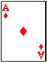
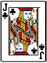

-

Panduan Bermain Poker Online
Texas Hold'em Poker merupakan permainan kartu poker yang sangat populer dan digemari saat ini. Oleh karena itu BANDARQQ365 hadir untuk para pecinta Texas Hold'em Poker yang mencari permainan poker online yang paling adil dengan sistem Player VS Player. Berikut adalah Panduan Bermain Texas Hold'em Poker BANDARQQ365.
2. Istilah Dasar Dalam Permainan PokerLobby : Tempat dimana anda bisa memilih room permainan Texas Hold'em Poker
Check : berarti memeriksa nilai taruhan yang ada di meja
Call : mengikuti nilai taruhan yang ada di meja
Call Any : mengikuti berapapun nilai taruhan yang ada di meja sebelum giliran anda bermain
Fold : tidak mengikuti nilai taruhan yang ada di meja
All in : mempertaruhkan semua chip milik anda di meja taruhan
Raise : menaikan nilai taruhan sesuai yang anda inginkan.Langkah Awal
Setelah anda melakukan login menggunakan user name dan password anda, klik di bagian "PLAY POKER Rupiah-" atau "PLAY POKER Andorid/iphone/ipad-". Kemudian akan muncul sebuah kolom dimana anda bisa memilih di LINE mana anda akan bermain. Setelah proses tersebut anda hanya perlu memilih di meja taruhan mana anda ingin bermain.Aturan Bermain
Pertama , anda akan diberikan 2 kartu lalu jika semua player menyatakan CALL/CHECK, baru bandar membuka kartu satu persatu (jika ada yang raise taruhan kartu tidak akan dibuka oleh bandar sampai semua pemain menyatakan CALL/CHECK) begitu seterusnya4. Susunan Kartu Permainan Poker
1. Pair
Pair: Kartu kembar (berpasangan). Contoh kartu Pair yaitu As dan As yang dinamakan One Pair. One Pair kalah dengan Two Pair, contohnya 3 3 dan 2 2, namun Two Pair kalah dengan Three of Kind atau kembar tiga contohnya 5 5 5.
2. Three of Kind
Three of Kind : kembar tiga contohnya J J J.
3. Kartu Straight (berurutan)
Kartu Straight (berurutan) : 5 kartu berurutan, contohnya 2 3 4 5 6 atau 10 J Q K As atau juga 5 6 7 8 9.4. Kartu Flush (semua motif sama)
Kartu Flush (semua motif sama) Adalah kartu yang terjadi apabila kita memiliki 5 kartu dengan jenis yang sama, berapapun angkanya, contohnya 2 4 5 7 8 bermotif SEKOP semua.
5. Full House (Three of Kind + One Pair)
Full House (Three of Kind + One Pair) Adalah kartu dengan gabungan dari Three of Kind + One Pair. Contohnya K K K + 10 10
6. Four Of Kind (angka kembar 4)
Four Of Kind (angka kembar 4) Kartu yang terjadi apabila memiliki 4 kartu kembar, contohnya As As As As 8
7. Straight Flush (berurutan dan semua motif kartu sama)
Straight Flush (berurutan dan semua motif kartu sama) Straight Flush adalah gabungan dari kartu Straight (kartu berurutan) dan kartu Fush (semua motif sama). Contohnya kartu 5 6 7 8 9 KERITING (CLUB)
8. Royal Flush (berurutan sampai As dan semua motif kartu sama)
Royal Flush (berurutan sampai As dan semua motif kartu sama) Royal Flush adalah kartu Straight Flush dengan nilai yang lebih tinggi, contohnya lawan memiliki 5 6 7 8 9 keriting dan kita memiliki 10 J Q K As HATI
Kartu yang nilainya lebih tinggi akan mengalahkan kartu yang nilainya lebih rendah. Contoh : Nilai kartu 2 akan kalah dengan 3,3 kalah dengan 4,4 kalah dengan 5, dan seterusnya,10 kalah dengan J (jack), J kalah dengan Q (Queen), Q kalah dengan K (king), K kalah dengan A (ACE).
Nilai kartu tertinggi (High Card) berapapun juga, akan kalah dengan kombinasi kartu yang bernama "one pair".
"One pair" kalah dengan "Two Pair"
"Two Pair" kalah dengan "Three of a kind"
"Three of a kind" kalah dengan "Straight"
"Straight" kalah dengan "Flush"
"Flush" kalah dengan "Full House"
"Full House" kalah dengan "Four of a kind"
"Four of a kind kalah dengan "Straight Flush"
"Straight Flush" kalah dengan "Royal Flush" -
Panduan Bermain Domino Online
Berikut ini adalah ketentuan bermain Domino:
- Didalam permainan Kiu Kiu kita Menggunakan Kartu Domino, 1 Set Kartu Domino Berjumlah 28 Kartu.
- Setiap Meja Hanya Disediakan 6 Buah Kursi, YaNG Artinya Kartu Yang Dibagikan Hanya Berjumlah 24 Kartu.
- Permainan Kiu Kiu Juga Tidak Mempunyai Bandar (Member vs Member).
- Tahap Pertama Didalam permainan Kiu Kiu Adalah Setiap Member akan Mendapatkan 3 Buah Kartu Yang Akan Dibagikan Oleh Dealer Secara Acak.
- Dalam 3 Buah Kartu Itu, Kita Diberi Kesempatan Untuk Mengkombinasikan 2 Kartu supaya Berjumlah Nilai 9 (jika 2 kartu bernilai 9, itulah yang disebut Kiu)
- Bagaimana Jika Dalam 3 Kartu Tidak Bisa Kombinasikan 2 Kartu Menjadi Nilai 9 ??? Tidak Apa Apa, karena Kita Memiliki Kesempatan Untuk Mendapatkan Nilai 9 Dikartu Ke 4, Namun Dengan Catatan Kita Harus Mulai Bertaruh Dengan Member Yang lain.
- Namun Sangat Disarankan apabila Saat 3 Kartu Tidak Mendapatkan Kiu, Sebaiknya Melakukan FOLD saja, Karena Kesempatan Untuk Menang Sangatlah Tipis.
- Cara Menentukan Pemenang Dipermainan Kiu Kiu Adalah Dengan membandingkan Kartu Kita Dengan Kartu Yang Lain.
-
Bagaimana jika Nilai Kartu Kita Sama Dengan Nilai Kartu Pemain Lain ??? yang Akan Menentukan Pemenang Dalam kasus Ini Adalah Kartu Backing.
Contoh:- Member 1 Mendapatkan Kartu (2/3 1/3 --> Kiu karena 2 Kartu Berjumlah 9 Point, 3/3 0/2 --> 8 Karena 2 Kartu Berjumlah 8 point) Disebut Kiu 8.
- Member 2 Mendapatkan Kartu ( 1/4 2/2 --> Kiu Karena 2 Kartu Berjumlah 9 Point, 0/5 0/3 --> 8 Karena 2 Kartu Berjumlah 8 Point) Disebut Kiu 8.
- Yang Menjadi Pemenang Dalam Kasus Ini Adalah Member 2, Karena Member 2 Mempunyai Kartu BALAK 2/2.
- Bagaimana Jika Ke 2 member Tidak Mempunyai Kartu Balak ???
- Nilai 1 Kartu TerTinggilah Yang akan Menjadi Pemenangnya, Dalam Contoh Diatas yang menjadi Pemenang Adalah Member 2 Karena Mempunyai Kartu 0/5.
- Bukankah Member 1 Juga mempunyai Nilai 5 Dikartu 2/3 ??? Kenapa Malah Member 2 Yang Menang ??? Karena Member 2 Mempunyai Angka 5 Dikartu 0/5.
-
Didalam permainan Kiu Kiu kita Juga Mengenal kartu JACKPOT, Kartu JACKPOT Terdiri Dari 4 Jenis Yaitu :
-
Kartu 6 Dewa Terdiri Dari 4 Buah Kartu Dimana Setiap Karu Berjumlah Nilai 6 Kartu Balak Terdiri Dari 4 Buah Kartu Balak
Contoh: 1/1 2/2 3/3 4/4 - Bintang Besar, Total Nilai Dari Ke 4 Kartu Minimal Berjumlah 40
- Bintang Kecil, Total Nilai Dari Ke 4 Kartu Maximal Bernilai 9
-
Kartu 6 Dewa Terdiri Dari 4 Buah Kartu Dimana Setiap Karu Berjumlah Nilai 6 Kartu Balak Terdiri Dari 4 Buah Kartu Balak
-
Panduan Bermain Capsa Susun Online
Cara bermain Capsa Susun dalam permain di www.Bandarqq365.com adalah dengan menyusun kartu yang sudah disusun dalam tiga tingkatan yang berbeda, kartu paling atas terdiri dari 3 kartu dan 2 tingkat lainnya terdiri dari 5 kartu. Pemenang adalah pemain yang mendapatkan kemenangan dari jumlah kemenangan tiap tingkat. Masing-masing tingkatan memiliki hitungan berbeda-beda.Urutan angka pada permainan capsa adalah 2, 3, 4, 5, 6 dan seterusnya urutan gambar pada permainan capsa adalah Wajik (Diamond), Keriting (Pohon Beringin), Hati (Love) dan Waru (Daun).
Kartu yang sudah dibagi mempunyai susunan yang bermacam-macam dengan tingkatan kekuatan atau kemenangan. Berikut macam susunan kartu untuk bermain di Bandarqq365 :
- 2,3,4,5,6,7,8,9,10,J,Q,K,A disebut Dragon angka terbesar dalam permainan Capsa Susun
Contoh : 2,3,4,5,6,7,8,9,10,J.Q,K,A dengan warna dan daun yang sama - A,2,3,4,5 atau 10,J,Q,K,A dengan daun yang sama makany disebut (Straight Flush)
Contoh : A,2,3,4,5 atau 10,J,Q,K,A dengan warna dan daun yang sama - Untuk 4 kartu angka sama makany itu disebut (Piting (Siki))
Contoh : A,A,A,A,2 dengan warna daun yang beda - Untuk 3 kartu sama dan 2 kartu yang sama disebut (Polo)
Contoh : A,A,A,2,2 dengan warna daun yang beda - Untuk warna daun yang sama tapi angka tidak sama disebur (Flush)
Contoh : 5,8,10,J,K dengan warna dan daun yang sama - Untuk angka yang berbeda tetapi berurutan disebut (Seri (Straight))
Contoh : A,2,3,4,5 atau 10,J,Q,K,A tetapi dengan warna daun yang tidak sama - Untuk 3 Kartu yang sama dengan 2 kartu yang berbeda disebut (Trees)
Contoh : A,A,A,2,3 dengan warna daun yang berbeda - Untuk 2 kartu yang sama dengan 3 kartu yang berbeda disebut (Pair)
Contoh : A,A,2,3,4 dengan warna daun yang berbeda
Cara permainan capsa susun harus disusun berurutan seperti tingkatan ketiga atau susunan paling bawah harus lebih besar dari tingkatan kedua atau susunan ditengah. Untuk tingkatan paling atas atau tingkatan pertama harus mempunyai angka yang lebih besar dari lawan misalkan player A mempunyai angka kartu A,A,2 dan player B mempunyai kartu K,K,2 makanya untuk hitungan susun diatas dimenangkan oleh player A.Contoh keterangan nomor 1,2,3 dan seterunya adalah susunan kartu dari terbesar hingga susunan kartu paling terkecil dalam susunan permainan capsa susun.Catatan :
UNTUK SETIAP KEMENANGAN AKAN DIHITUNG DARI PERKALIAN MEJA YANG ANDA MAINKAN. SETIAP HITUNGAN BERBEDA-BEDA DARI SETIAP SUSUNAN TINGKATAN. - 2,3,4,5,6,7,8,9,10,J,Q,K,A disebut Dragon angka terbesar dalam permainan Capsa Susun
-

Panduan Bermain Bandar Q Online
BANDAR Q adalah permainan bandar keliling, semua pemain berhak menjadi bandar jika uang taruhan mencukupi. Dalam meja 1000, harus ada uang taruhan min Rp 50.000 baru bisa ikutan jadi bandar.
Cara bermain BANDAR Q ini caranya sama seperti KiuKiu, perbedaannya KiuKiu memakai 4 kartu domino, kalau BANDAR Q memakai 2 kartu domino saja. Kartu domino yang digunakan terdiri dari 28 kartu dan setiap kartu memiliki nilai yang berbeda-beda.
Permainan BANDAR Q ini dimainkan oleh 2 sampai 8 pemain dan ada 1 pemain yang menjadi bandar.
Setelah pemain diberikan 2 kartu, lalu pemain diberikan kesempatan untuk memirit (mengintip) kartu yang telah diberikan. Setelah selesai melakukan piritan, pemain dipersilahkan untuk menunjukkan kartunya kepada semua pemain lain di meja tersebut.
Selanjutnya akan dilakukan penghitungan antara kartu bandar dan kartu pemain. Nilai kartu yang lebih tinggi akan memenangkan permainan.2. Cara Menghitung Jumlah Kartu Bandar Q
Adalah dengan menghitung jumlah bulatan 2 kartu yang dimiliki. Bulatan pada tiap kartu di sisi kiri dan jumlahkan dengan jumlah bulatan di sisi kanan,
Contoh:- Jika total bulatan pada 2 kartu lebih dari 9, maka nilai kartu dikurangi 10.
- Jika total bulatan pada 2 kartu lebih dari 19, maka nilai kartu dikurangi 20. dst
Jika ada 3 pemain bermain di 1 meja:
Pemain 1 mempunyai kartu 2
Pemain 2 mempunyai kartu 8
Pemain 3 mempunyai kartu 7
Maka pemain 2 lah yang menjadi pemenangnya(karena pemain 1 kartunya 2, Pemain 3 kartunya 7)
Dan Pemain 2 berhak atas uang taruhan yang ada di meja.
Nilai kartu terkecil adalah 0 dan nilai kartu terbesar adalah 9
3. Penentuan Pemenang di Bandar Q
Bila jumlah kartu player lebih besar dibanding bandar, maka bandar akan membayar player sesuai taruhan yang dipasang player.
Contoh:Bila jumlah kartu bandar lebih besar dibandingkan player, maka bandar akan mendapatkan uang sejumlah taruhan yang dipasang player.
Contoh:Bandar akan selalu menang jika mendapat jumlah kartu yang sama dengan player.
Contoh:Player yang mendapatkan kartu kiu(9), bandar akan membayarnya sebanyak 2x lipat dari taruhan yang player tersebut pasang.
Contoh:Bila bandar mendapatkan Kiu(9), maka semua player akan membayar kepada bandar
Contoh Pasangan Kiu
Catatan
Jika ada 2 player dan 1 bandar bermain di 1 meja:
Player1 mempunyai kartu 2,
Player2 mempunyai kartu 8,
Bandar mempunyai kartu 7,
Maka player1 akan membayar ke bandar (karena player1 kartunya 2, bandar kartunya 7)
Dan bandar akan membayar ke player2 (karena player2 kartunya 8, bandar kartunya 7)
Dan ini berlaku untuk 3 player, 4 player, dst.. sampai 7 player.
Nilai kartu terkecil adalah 0 dan nilai kartu terbesar adalah 9
Bila salah satu pemain mendapatkan angka 9 maka pembayaran di kali 2
Jika nilai kartu pemain dan bandar adalah Seri / Draw, kartu bandar akan dianggap menang. Dengan kata lain, kartu pemain haruslah lebih tinggi (tidak sama) untuk dapat memenangkan permainan melawan bandar. - Jika total bulatan pada 2 kartu lebih dari 9, maka nilai kartu dikurangi 10.
-
Panduan Bermain SAKONG
Sakong bisa juga di sebut permainan 3 Picture (3 Gambar) Dan semua pemain bisa jadi BANDAR. Permainan sakong hanya mengunakan 3 kartu remi saja dan dapat dimainkan dengan jumlah 8 orang pemain dan salah satunya menjadi bandar. Dalam permainan sakong, kartu yang yang terbesar adalah kartu yang berjumlah 10 atau 20 atau 30 dan kartu yang terkecil adalah kartu yang berjumlah 1.Dan untuk kartu King, Queen dan Jack, dihitung 10 atau 0 (nol), untuk kartu 10 akan dihitung 10 (sepuluh) atau 0 (nol) sedangkan kartu AS dihitung 1 (satu)/11. Setelah semua pembagian kartu selesai maka kartu akan di adu dengan kartu bandar.
- A A A
 - K K K

- Q Q Q
- J J J
 - 10 10 10
- KQJ, KKQ, KKJ, QQJ, JJK, JJQ
- KQ10, KJ10, QJ10, JJ10, K10, KA9, K82, Q37, A27, 622 Dan semua kartu yang di kombinasi total jumlah 3 kartu adalah 10, 20 dan 30
"Jika semua pemain dan bandar tidak memiliki kartu tertinggi seperti urutan diatas maka nilai jumlah dari 3 kartu tertinggi yang di adu dengan bandar (nilai tertinggi yang menang)"
- Bandar memiliki jumlah kartu 5 Maka Bandar menang dari pemain no.1 dan no.3
- Pemain no.2 memiliki jumlah kartu 8 Maka Pemain no.2 menang dari Bandar
- Pemain no.1 memiliki jumlah kartu yang sama dengan Bandar Maka Pemain no.1 kalah dari Bandar (Jika hasil seri, maka bandar menang)
- A A A
-

Panduan Bermain Adu Q Online
Adu Q adalah permainan saling adu jumlah nilai kartu, jumlah kartu yang besarlah yang menjadi pemenangnya. Kartu domino yang digunakan terdiri dari 28 kartu dan setiap kartu memiliki nilai yang berbeda beda.
Caranya sama seperti permainan domino/kiu kiu, perbedaannya kiu kiu memakai 4 kartu domino, kalau Adu Q memakai 2 kartu domino saja. Dan dalam permainan ini tidak ada bandar (pemain vs pemain) dan setiap pemain akan mendapatkan 2 kartu.
Setelah pemain diberikan 2 kartu, lalu pemain diberikan kesempatan untuk memirit (mengintip) kartu yang telah diberikan..2. Cara Menghitung Jumlah Bulatan 2 KartuCara menghitung jumlah bulatan 2 kartu. Bulatan pada tiap kartu di sisi kiri dan jumlahkan dengan jumlah bulatan di sisi kanan, contoh:
- Jika total bulatan pada 2 kartu lebih dari 9, maka nilai kartu dikurangi 10.
- Jika total bulatan pada 2 kartu lebih dari 19, maka nilai kartu dikurangi 20. dst
Jika ada 3 pemain bermain di 1 meja:
Pemain 1 mempunyai kartu 2
Pemain 2 mempunyai kartu 8
Pemain 3 mempunyai kartu 7
Maka pemain 2 lah yang menjadi pemenangnya(karena pemain 1 kartunya 2, Pemain 3 kartunya 7)
Dan Pemain 2 berhak atas uang taruhan yang ada di meja.
Nilai kartu terkecil adalah 0 dan nilai kartu terbesar adalah 9
- Jika total bulatan pada 2 kartu lebih dari 9, maka nilai kartu dikurangi 10.
-
Panduan Bermain Bandar 66
BANDAR 66 merupakan permainan yang menggunakan kartu remi atau domino, diperkirakan permainan ini hampir mirip dengan permainan AduQ hanya saja mungkin ada sedikit perbedaan dalam sistem permainannya. Yang di mainkan untuk 6-8 orang dan masing masing player dapat menjadi bandar jika memiliki uang yang cukup untuk menjadi Bandar seperti BANDAR Q dimana Setiap Player dapat menjadi Bandar. Tapi tidak menutup kemungkinan jika permainan ini di mainkan dengan bandar aslinya seperti permainan poker. adapun cara bermain dan peraturan di permainan baru ini adalah sebagai berikut .
CARA BERMAIN PERMAINAN BANDAR 66 ONLINE
BANDAR 66 dimainkan oleh maksimal 8 pemain dan minimal 2 pemain dengan sistem bandar keliling dan menggunakan 2 set kartu domino. Dalam ronde pertama seriap pemain akan mendapatkan satu kartu serta mengadunya dengan kartu pemain lainnya.
siapa yang paling tinggi itu yang akan menjadi pemenang ada pun peta kekuatan kartu adalah seperti yang ada seperti diatas gambar.
Dalam permainan baru ini ada dua peraturan baru yang diterapkan, adapun peraturan tersebut adalah yang pertama jika kartu yang anda miliki sama tingginya dengan bandar anda maka yang memenangkannya adalah bandar, dan yang kedua adalah jika anda mendapatkan kartu double 6/6 dan kartu double 5/5 maka anda akan dibayar dua kali lipat oleh bandar. jika anda masih binggung diatas admin telah menyediakan gambar yang dapat membantu anda.
Dalam permainan kali ini kamu di berikan kesempatan untuk melawan bandar dan kamu juga bisa mengadu kartu yang kamu miliki dengan kartu pemain lain yang berjalah 6 orang selain bandar. jadi jika lawan yang kamu ajak untuk beradu menerimanya maka itu dianggap sah. seperti contoh gambar diatas.
CONTOH BET ADU BALAK ATAU BANDAR 66Jika anda mendapatkan kartu seperti diatas maka :
Bandar yang bakal jadi pemenang meskipun nominal titik berjumlah 6, sebab bandar miliki titik 6 dibagian bawah kartu.
Jika anda mendapatkan kartu seperti diatas maka :
Player lah yang bakal jadi pemenang meskipun nominal titik jumlah 10, sebab palyer miliki titik 6, dan 4.
Sedangkan bandar mempumpunyai jumlah titik lainnya 3. Jadi itu mampu di kalkulasikan. Karena jadi besar bakal jadi bagus.
Jika anda mendapatkan kartu seperti diatas maka :
Disini kenapa balak 4 mampu menang, sebab bandar66 adalah permainan balak. Meskipun ada titik 6, dan 5. Anda bakal tetep akalah oleh balak, meskipun balak 0.
Jika anda mendapatkan kartu seperti diatas maka :
Balak 5, bersaing bersama balak 5 maka pemenangnya bandar. Dikarenakan itulah kelebihan bandar.
Jika anda mendapatkan kartu seperti diatas maka :
Balak 6 bersaing bersama balak 5. Maka pemenangnya adalah balak 6. Karena nilai tertinggi itu adalah kartu balak 6. Balak merasa berasal dari 0-6.
Balak 0 adalah balak paling terkecil, namun balak 6 adalah balak paling terbesar.